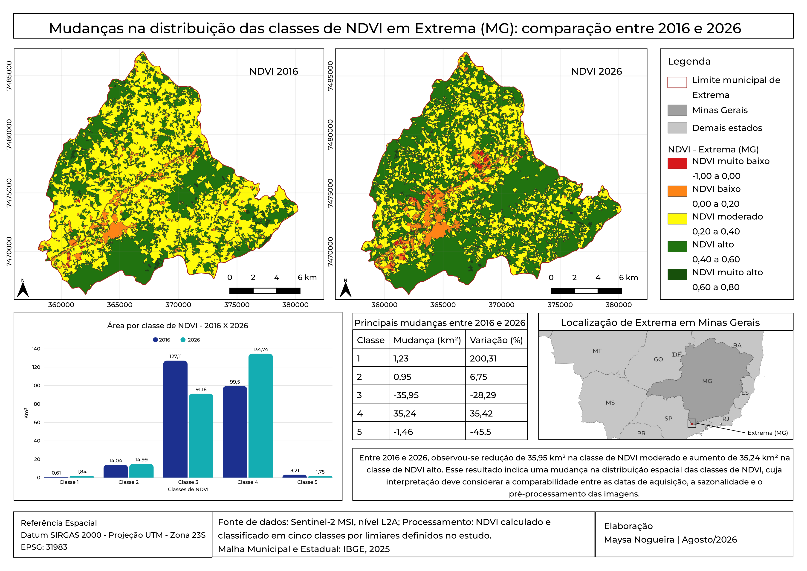

| Classe de NDVI (Intervalo Espectral) | 2016 (km²) | 2016 (%) | 2026 (km²) | 2026 (%) | Mudança (km²) | Variação (%) |
|---|---|---|---|---|---|---|
| Classe 1 — NDVI muito baixo (-1,00 a 0,00) | 0,61 | 0,25% | 1,84 | 0,75% | +1,23 | +200,31% |
| Classe 2 — NDVI baixo (0,00 a 0,20) | 14,04 | 5,74% | 14,99 | 6,13% | +0,95 | +6,75% |
| Classe 3 — NDVI moderado (0,20 a 0,40) | 127,11 | 51,99% | 91,15 | 37,28% | -35,95 | -28,29% |
| Classe 4 — NDVI alto (0,40 a 0,60) | 99,50 | 40,70% | 134,74 | 55,11% | +35,24 | +35,42% |
| Classe 5 — NDVI muito alto (0,60 a 0,80) | 3,21 | 1,31% | 1,75 | 0,72% | -1,46 | -45,50% |
| Setor Geográfico e Coordenada Central UTM | 3 → 2 (km²) | 3 → 1 (km²) | Total Redução |
|---|
| 2016 \ 2026 | C1 (M. Baixo) | C2 (Baixo) | C3 (Moderado) | C4 (Alto) | C5 (M. Alto) |
|---|
| Componente da Dinâmica Espacial (2016 → 2026) | Área (km²) | Participação |
|---|---|---|
| Permanência em "NDVI alto" (Classe 4 → Classe 4) | 89,40 km² | 65,0% da C4 (2026) |
| Entrada a partir de "NDVI moderado" (Classe 3 → Classe 4) | +45,95 km² | 33,4% da C4 (2026) |
| Entrada a partir de "NDVI muito alto" (Classe 5 → Classe 4) | +1,17 km² | 0,9% da C4 (2026) |
| Entrada a partir de "NDVI baixo / muito baixo" (C1/C2 → C4) | +1,07 km² | 0,8% da C4 (2026) |
| Saída de "NDVI alto" para outras classes (C4 → C1, C2, C3, C5) | -7,30 km² | 6,46 km² p/ Classe 3 |
| Indicador Territorial | Cenário 2016 | Cenário 2026 | Diferença |
|---|---|---|---|
| Classe 1 — NDVI muito baixo (-1,00 a 0,00) | 0,614 km² (0,25%) | 1,843 km² (0,75%) | +1,229 km² (+200,31%) |
| Classe 2 — NDVI baixo (0,00 a 0,20) | 14,044 km² (5,74%) | 14,992 km² (6,13%) | +0,947 km² (+6,75%) |
| Soma das Classes 1 + 2 (Muito Baixo + Baixo) | 14,658 km² (5,99%) | 16,834 km² (6,88%) | +2,177 km² (+14,85%) |
| Demais Classes (Classes 3 + 4 + 5: 0,20 a 0,80) | 229,825 km² (94,01%) | 227,649 km² (93,12%) | -2,177 km² (-0,95%) |
| Área Total Mapeada / Limite Municipal IBGE | 244,483 km² (100%) | 244,483 km² (100%) | IBGE: 244,575 km² |
| Indicador Territorial | Cenário 2016 | Cenário 2026 | Diferença |
|---|---|---|---|
| Classe 4 — NDVI alto (0,40 a 0,60) | 99,504 km² (40,70%) | 134,743 km² (55,11%) | +35,240 km² (+35,42%) |
| Classe 5 — NDVI muito alto (0,60 a 0,80) | 3,214 km² (1,31%) | 1,752 km² (0,72%) | -1,463 km² (-45,50%) |
| Soma das Classes 4 + 5 (Alto + Muito Alto) | 102,718 km² (42,01%) | 136,495 km² (55,83%) | +33,777 km² (+32,88%) |
| Demais Classes (Classes 1 + 2 + 3: -1,00 a 0,40) | 141,765 km² (57,99%) | 107,988 km² (44,17%) | -33,777 km² (-23,83%) |
| Área Total Mapeada / Limite Municipal IBGE | 244,483 km² (100%) | 244,483 km² (100%) | IBGE: 244,575 km² |
